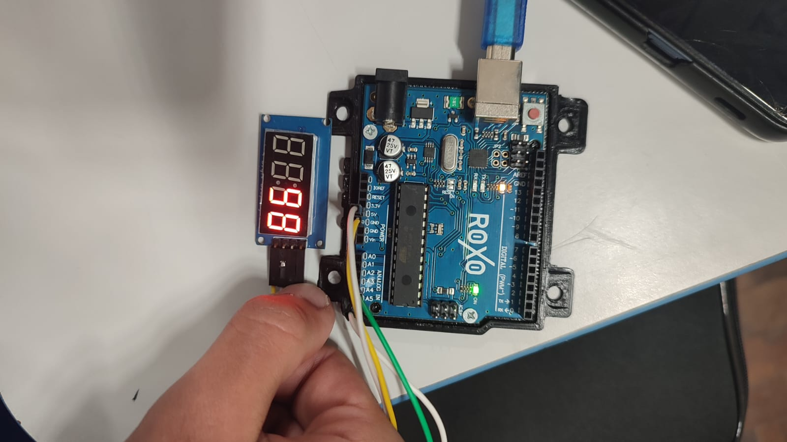
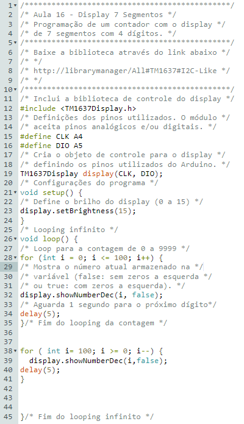

Introdução
Nossa prática realizada no dia 30/07/2023, foi uma montagem de um timer, onde era para programar um contador que varia de 0 a 9999 com o dispositivo módulo display de 7 segmentos com 4 dígitos.
- 1 placa de Arduino;
- 1 módulo display 7 segmentos com 4 dígitos;
- 4 jumpers macho-fêmea;
- 1 notebook;
- Software Arduino IDE;
- Software mBlock.
A Montagem

Logo abaixo segue os passos a serem tomados para se montar esse circuito:
- Ligue com dois jumpers macho-fêmea os pinos GND e 5V da placa Arduino aos pinos GND e VCC do display 7 segmentos, respectivamente.
- Utilizando outros 2 jumpers macho-fêmea, conecte o pino CLK do módulo display à porta analógica A4 do Arduino e o pino DIO à porta analógica A5. Esse módulo aceita qualquer porta digital ou analógica para a programação.
- Com os componentes eletrônicos montados, vamos programar, por có- digo e por blocos, o display de 7 Segmentos com 4 dígitos para que atue como um contador representando valores de 0 a 9999. Segue então o código utilizado para os comandos do timer:
- Após a transferência do programa para o Arduino, o contador iniciará sua operação, conforme comando estabelecidos na programação.

- Ele é utilizado em projetos com Arduino ou outras plataformas microcontroladas em que seja necessário controlar volume, controle de brilho em displays LCD ou controlar servo motores.